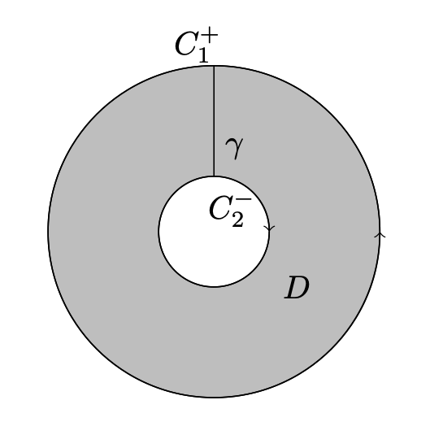
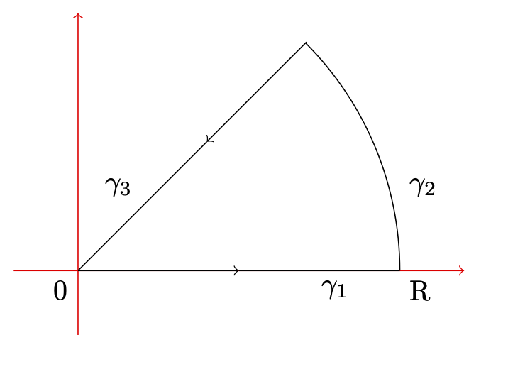

2.2. Théorème de Cauchy et conséquences#
\(\newcommand{\R}{\mathbb{R}}\) \(\newcommand{\Q}{\mathbb{Q}}\) \(\newcommand{\N}{\mathbb{N}}\) \(\newcommand{\C}{\mathbb{C}}\) \(\newcommand{\Z}{\mathbb{Z}}\)
2.2.1. Théorème de Cauchy#
Theorem 2.1
Soient \(f\) une fonction holomorphe sur un ouvert \(\Omega\) de \(\C\) non vide et \(D\subset\Omega\) un domaine simplement connexe
de contour \(C\). Alors
La propriété reste vrai si \(f\) est holomorphe sur \(D\backslash \{z_0\}\) et continu en \(z_0\).
Proof. La preuve élémentaire est relativement longue et utilise un découpage du domaine en triangle (on pourra par exemple aller voir [Rudin, 1995] pour les détails). Nous utiliserons le résultat plus avancé qu’est le théorème de Green Riemann, mais il n’est pas nécessaire à la preuve. Rappelons que ce théorème énonce que si \(C^+\) est le parcours de \(C\) dans le sens direct, alors
Or maintenant, nous avions vu que l’on pouvait réécrire
Finalement, la caractérisation des fonction \(\C\)-dérivable (conditions de Cauchy) énoncés dans le théorème Theorem 1.2 nous donne que
En combinant ces trois résultats, nous avons bien démontré le théorème.
Axiom 2.1 (A propos du sens de parcours)
On définit le sens de parcours direct. Pour cela, on prend le vecteur normal \(\vec{n}\) pointant vers l’intérieur du domaine. Puis on trouve un vecteur tangent \(\vec{\tau}\) à la courbe \(C\) qui vérifie \(\langle \vec{\tau},\vec{n}\rangle ={\bf +} \frac{\pi}{2}\), et l’on parcours la courbe en suivant l’orientation indiqué par ce vecteur.
Corollary 2.1 (Généralisation aux ensembles avec \(n-1\) trous)
Soient \(f\) une fonction holomorphe sur un ouvert \(\Omega\) de \(\C\) non vide et \(D\subset\Omega\) un domaine \(n\)-connexe de contour extérieur \(C_1^+\) et de contours intérieurs \(C_i^-\). Alors
Proof. Sans rentrer dans les détails techniques, l’idée de la preuve consiste à suivre un contour parcourant \(C_1\), puis une “orbite de transfert” \(\gamma\) jusqu’à \(C_2\), parcourir \(C_2\) dans le sens indirect, avant de parcourir \(\gamma\) dans le sens inverse (puis prendre autant “d’orbite de transfert” que de trous). Nous aurons alors un contour d’un ensemble simplement connexe puisque nous aurons relié les trous à l’exterieur, sur lequel nous pourrons appliquer le théorème de Cauchy, avant de remarquer que les contribution des transferts se compensent. Visuellement, on suit un parcours de la forme suivante :
{kind=link}
Une conséquance du théorème de Cauchy est qu’une fonction holomorphe admet une primitive au sens complexe. Nous verrons dans la section Développement en série entière des fonctions holomorphes (H.P.) de manière surprenante qu’il s’agit en fait d’une équivalence.
Corollary 2.2 (Généralisation aux ensembles avec \(n-1\) trous)
Soit f holomorphe sur un domaine simplement connexe D.
Alors il existe \(F\) une fonction holomorphe sur \(D\) qui est une primitive de \(f\), c’est-à-dire vérifiant
Proof. Soient deux points \(a\) et \(b\) de \(D\). Sous les hypothèses, nous allons pouvoir définir \(\int_a^b f(z)dz\).\newline En effet, soient \(\gamma_1,\gamma_2\) deux chemins inclus dans \(D\) d’origine \(a\) et d’extrémité \(b\). Alors si l’on parcours \(\gamma_1\) suivi du parcours dans le sens inverse de \(\gamma_2\), nous aurons un lacet (donc le parcours d’un contour). D’après le théorème de Cauchy, l’intégrale sera alors nulle. Avec la propriété reliant juxtapositions de chemins et intégrales, nous obtenons donc que
Nous définissons donc \(\int_a^b f(z)dz\) comme la valeur commune des intégrales de \(f\) le long d’un chemin reliant \(a\) à \(b\).
Fixons \(u_0\in D\) et posons
Montrons que F convient. Donnons nous \(w\in D\), et \(\gamma\) un chemin quelquonque de \(u_0\) à \(w\) (qui existe bien puisqu’un ouvert connexe est connexe par arc). Comme \(D\) est ouvert, il existe un rayon \(r>0\) tel que \(B(w,r)\subset D\). Notons pour \(h\in B(w,r)\) le chemin \(\gamma_h : t\in [0,1]\mapsto w+th\). Toujours avec la propriété même propriété de juxtaposition, pour montrer que \(F'(w)=f(w)\) il nous suffit de montrer que \(\frac{1}{h}\int_{\gamma_h}f(z)dz \to f(w)\).
Or, \(\int_{\gamma_h}f(z)dz=\int_0^1 f(w+th)hdt\) et \( \int_0^1 f(w+th)dt\to f(w)\) (par convergence dominée par exemple).
Ainsi, en regroupant les arguments, nous avons bien que \(F'(w)=f(w)\).
2.2.2. Développement en série entière des fonctions holomorphes (H.P.)#
Proposition 2.3 (Formule intégrale de Cauchy)
Soit \(U\subset \C\) un ouvert et \(f\in \mathcal{H}(U)\) une fonction holomorphe. Soit \(\overline{B(a,r)}\subset U\) un disque fermé inclu dans \(U\) de bord \(C\).
Alors
Proof. On se fixe dans toute la preuve \(z\in B(a,r)\).
On pose \(g:w\mapsto \frac{f(z)-f(w)}{z-w}\). Il est immédiat que \(g\) est holomorphe sur \(U\backslash\{z\}\) et continu en z. D’après le théorème de Cauchy,
Or
Remarque : l’interversion dans les calculs est justifié par le théorème de Fubini, car \([0,2\pi]\) est borné, et puisque \(|z-a|<r\), on aura que \(\sum |\frac{z-a}{r}|^k<+\infty \).
Donc finalement,
Corollary 2.3 (Développement en série entière)
Soit \(f\) une fonction holomorphe, alors \(f\) est développable en série entière au voisinage de tout point intérieur.
Proof. Il s’agit comme dans la preuve de développer en série entière \(\frac{1}{z-w}\) dans \(\int_C\frac{f(w)}{z-w}dw\), puis de justifier l’interversion avec le théorème de Fubini-Tonelli (en majorant localement \(f\) par une constante par exemple).
Remark 2.1
Ceci prouve que toute fonction holomorphe est analytique (donc infiniment dérivable). En particulier, l’équivalence énoncée dans la section précédente en découle, puisque si \(f\) a une primitive \(F\), alors \(F\) est holomorphe, et donc admet une dérivée seconde.
2.2.3. Développement en série de Laurent#
Proposition 2.4 (Développement de Laurent sur les anneaux)
Soit \(f\) holomorphe sur un anneau \(A(z_0,r,R)\), alors il existe \((a_n, b_n)\) tels que
et ces coefficients sont uniques, déterminé (pour n’importe quel cercle inscrit dans la couronne) par \(a_n=\frac{1}{2i\pi}\int_C \frac{f(z)}{(z-a)^{n+1}}dz\) et \(b_n=\frac{1}{2i\pi}\int_C f(z)(z-a)^{n-1}dz\).
Proof. On pose \(g:w\mapsto \frac{f(z)-f(w)}{z-w}\).
En notant \(C_r\) et \(C_R\) les cercle entourant l’anneau, on a d’après la généralisation du théorème de Cauchy que
Car \(w\mapsto \frac{1}{z-w}\) est holomorphe sur \(B(z_0,r)\)
Pour montrer la caractérisation, il s’agit d’effectuer une inversion série-intégrale, par convergence dominée par exemple. En effet, pour \(C\) un cercle centré en l’origine,
Exercise 2.1
A l’aide du contour suivant, calculer \(I=\int_0^{+\infty} e^{ix^2}dx\). En déduire la valeur de l’intégrale impropre \(\int_{0}^{+\infty}\sin(x^2)dx\).
{kind=link}
Solution
Comme \(z\mapsto e^{iz^2}\) est holomorphe comme composition de fonction holomorphe, et que le contour proposé entoure un domaine simplement connexe, nous pouvons applique le théorème de Cauchy :
Par définition de l’intégrale impropre, et en prenant comme paramétrisation \(\gamma_1 : t\in [0,R]\mapsto t\), nous avons immédiatement que
Le traitement du chemin \(\gamma_2\) est plus complexe, puisque les lemmes de Jordan ne suffisent pas. Nous aurons besoin du fait suivant :
Fait : \(\forall u\in[0,\frac{\pi}{2}], \sin(u)\geq \frac{2u}{\pi}\).
Ce fait est immédiat en remarquant que la fonction sinus est concave sur l’intervalle considéré, et donc au-dessus de ses cordes.
Maintenant, calculons avec la paramétrisation \(\gamma_2 : \theta\in[0,\frac{\pi}{4}]\mapsto Re^{i\theta}\) :
d’après le fait précédent, $\(\left|\int_{\gamma_2}e^{iz^2}dz\right|=\left[-\frac{\pi}{4R} e^{-\frac{4R^2}{\pi}\theta}\right]_0^{\frac{\pi}{4}}\leq \frac{\pi}{4R} \to 0. \)$
Enfin, pour \(\gamma_3 : t\in [0,R]\mapsto (R-t)e^{i\frac{\pi}{4}}\), on trouve
Donc finalement
Pour l’intégrale impropre, il suffit alors de prendre la partie imaginaire :
Exercise 2.2
Soit \(a>0\). À l’aide du rectangle de sommets \(\{±R,±R +i\frac{a}{2}\}\), calculer \(\int_{-\infty}^{+\infty} e^{-x^2}\cos(ax)\).
Solution
On pose \(g : z\mapsto e^{-z^2+iaz}\). Le théorème de Cauchy nous annonce que
Par convergence dominée (dominé par \(t\mapsto e^{t^2}\) continue), il est immédiat que
Maintenant,
Donc finalement,